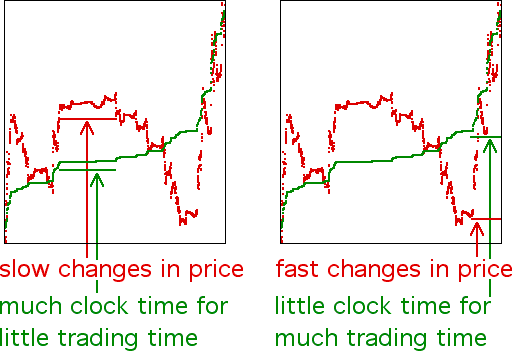

| To illustrate how trading time and price changes are related, we plot price vs clock time and trading time vs clock time. |
| We see that trading time compresses clock time when price is quiescent and expands clock cime when price is volatile. |
| Note the price and trading time graphs are steep in the same clock time ranges, and nearly flat in the same clock time ranges. |
| This means when the price is volatile (large price changes in small clock time), a small amount of clock time (horizontal axis) is stretched into a large amount of trading time (vertical axis). |
| Similarly, when the price is quiescent (small price changes in clock time), a large amount of clock time is compressed into a small amount of trading time. |
|  |
Return to Example 1.